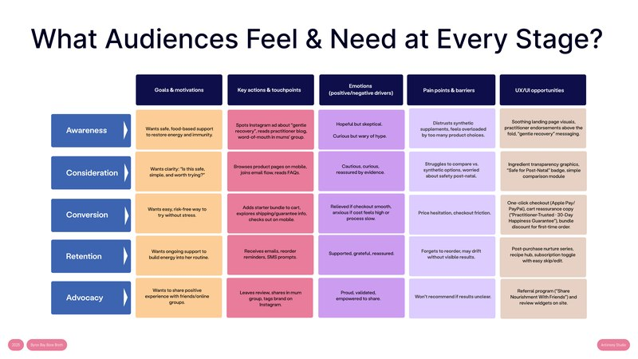
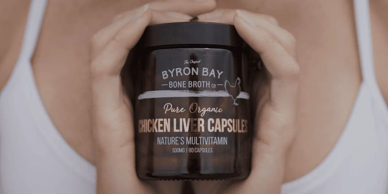

Byron Bay Bone Broth
B2B Channel Development | Product Campaigns | Customer Research & Digital Experience
Connecting commercial growth with a better understanding of the customer

Business context
Byron Bay Bone Broth is an Australian food and wellness business built around traditional nutrition, quality ingredients and wholefood products.
Our engagement coincided with the business expanding its product offering, including the introduction of chicken liver capsules and dehydrated bone broth.
These products presented opportunities to reach new customers while building stronger retail and practitioner distribution channels.
Alongside the commercial rollout, the business was looking to better understand customer behaviour and improve the experience across its digital channels.
The challenge
The business was working across different audiences with distinct motivations and information needs.
Direct consumers wanted to understand the products, their benefits and how they could fit into their daily routines.
Specialty retailers needed a commercially relevant product proposition, suitable sales materials and confidence in the range.
Health practitioners required credible product information and a clear understanding of how the products could be introduced to appropriate clients.
At the same time, the e-commerce experience needed to communicate these propositions effectively and support customers from initial discovery through to purchase and repeat engagement.
The challenge was therefore both commercial and experiential: developing new routes to market while improving how the brand communicated with different customer groups.
Our approach
Antimony's engagement combined two connected programmes.
Product launch & channel development
Chapter one approach
Audience & market research
The programme began with identifying suitable retail and practitioner audiences, reviewing the relevance of prospective partners and understanding where the new products could find an appropriate market.
B2B & B2C campaign development
The studio contributed to the development of campaigns supporting the rollout of chicken liver capsules and dehydrated bone broth.
Communications and creative assets needed to address consumer audiences alongside the different requirements of retailers and practitioners.
Partner development
The work included identifying suitable early partners, researching prospective stockists and practitioners, supporting introductions and helping establish opportunities for product adoption and future case studies.
The wider programme also included ambassador and partnership activity to support market awareness.
Creative production & rollout
Antimony coordinated the development and delivery of campaign and product communications, working across the client's commercial priorities and the studio's creative resources.


Customer experience & digital optimisation
Chapter two approach
Customer research & segmentation
The customer experience programme included audience research, stakeholder inputs and the review of customer responses, motivations, objections and information needs.
This work supported segmentation and a more detailed understanding of the different audiences interacting with the brand.
Customer journey & lifecycle mapping
The team developed customer journey and lifecycle work covering key stages and touchpoints across awareness, consideration, purchase and repeat engagement.
This included reviewing digital touchpoints, information requirements, trust signals and opportunities for more relevant customer communications.
UX & conversion review
A structured CRO audit examined the website's homepage, navigation, product pages and conversion pathways.
The findings were developed into prioritised recommendations addressing usability, information hierarchy, education and customer confidence.
Digital experience recommendations
The programme connected customer research and journey mapping with practical opportunities to improve the e-commerce experience, including product communication, site navigation and customer engagement.


My contribution
I managed the senior client relationship and delivery across the commercial and digital experience workstreams.
For the product rollout, I contributed to campaign strategy and was directly involved in prospective partner research, retailer and practitioner identification, initial business development and introductions.
I collaborated on the product and pricing strategy and the practitioner proposal, and coordinated the creation and rollout of campaign assets, working with Antimony's creative team and the client's commercial stakeholders.
Once introductions were established, the client's sales team managed final negotiations and account conversion.
I led the CX research and strategy, including the competitor audit, audience segmentation and customer journey report. Working with Antimony's Chief Strategist and Marketing Coordinator, I turned the findings into prioritised digital recommendations, which were implemented after user acceptance testing.
A central part of my role was connecting the commercial opportunities with the broader customer experience and ensuring both programmes progressed through delivery.


Services & deliverables
- B2B and B2C product launch campaigns
- Retail and practitioner market research
- Prospect identification and partner introductions
- Product and channel communications
- Ambassador and partnership programme support
- Campaign creative production and rollout
- Customer research and segmentation
- Customer journey and lifecycle mapping
- Content and digital touchpoint strategy
- E-commerce UX and CRO audit
- Conversion and experience recommendations
- Senior client leadership and multidisciplinary delivery
Outcome
- From around 20 to 48 stockists
The business expanded its active stockist network substantially during the engagement, growing from approximately 20 locations to 48, including 10 health practitioners.
The commercial work supported broader market access through retail and practitioner channels, with account conversion undertaken by the client's sales team.
Alongside this, the CX programme delivered customer research, journey mapping, digital experience analysis and prioritised recommendations for improving customer understanding and online conversion pathways. The conversion recommendations were implemented following user acceptance testing.
Together, the programmes connected commercial channel development with a more informed approach to the customer experience.